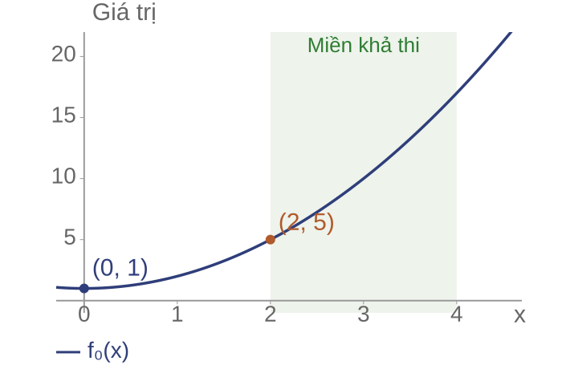
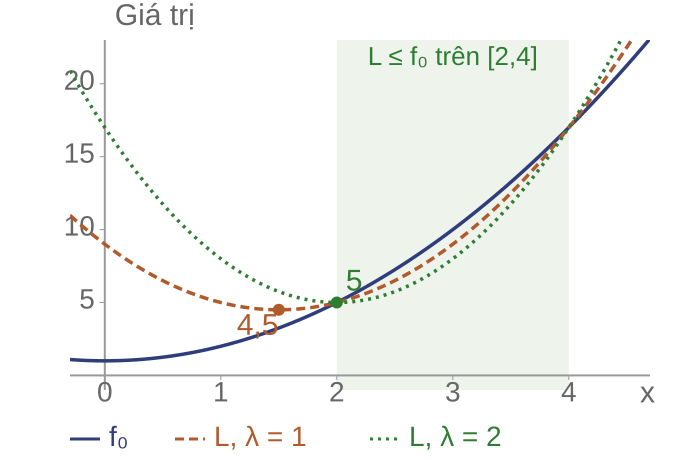
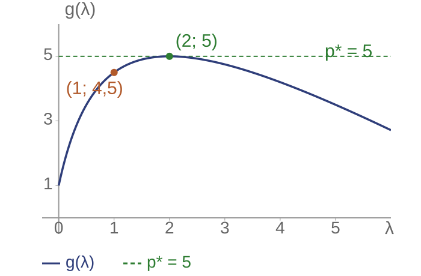
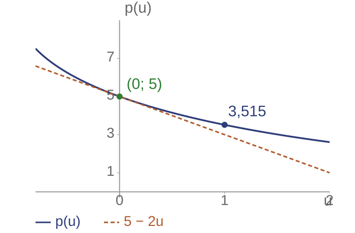

Hàm và bài toán đối ngẫu Lagrange
Bài toán cực tiểu có ràng buộc: tìm giá trị nhỏ nhất của hàm mục tiêu trong các điểm thỏa ràng buộc.
Một điểm thỏa mọi ràng buộc được gọi là điểm khả thi.
Tìm được một điểm khả thi chưa đủ để kết luận đó là nghiệm tối ưu.
Đối ngẫu Lagrange tạo cận dưới cho giá trị tối ưu. Nếu cận này bằng giá trị mục tiêu tại một điểm khả thi, điểm đó là nghiệm tối ưu.
Ví dụ tối ưu có ràng buộc
Bài toán: Tìm số thực $x$ để $x^2+1$ nhỏ nhất, với $2\le x\le4$.

Hàm mục tiêu: $f_0(x)=x^2+1$.
Viết ràng buộc dưới dạng:
$$f_1(x)=(x-2)(x-4)\le0$$
Miền khả thi: $[2,4]$.
Nghiệm tối ưu: $x^*=2$.
Giá trị tối ưu: $p^*=5$.
Họ hàm tạo cận dưới

Với $\lambda\ge0$, đặt $L=f_0+\lambda f_1$.
Trên miền khả thi: $L\le f_0$.
Chọn $\lambda=1$:
$$L(x,1)=2(x-1{,}5)^2+4{,}5$$
$f_0(x)\ge4{,}5$ với mọi $x$ khả thi.
Hàm Lagrange
$x\in\mathbb R^n$, $f_i:\mathbb R^n\to\mathbb R$ ($i=0,\ldots,m$).
Bài toán gốc: $\min f_0(x)$, với $f_i(x)\le0$, $Ax=b$.
Định nghĩa.
$$L(x,\lambda,\nu)=f_0(x)+\sum_{i=1}^m\lambda_i f_i(x)+\nu^T(Ax-b)$$
$\lambda\in\mathbb R^m$, $\lambda\ge0$; $\nu\in\mathbb R^r$ tự do.
Hàm đối ngẫu
Định nghĩa. Giữ nhân tử cố định, lấy cận dưới theo $x$:
$$g(\lambda,\nu)=\inf_{x\in\mathbb R^n}L(x,\lambda,\nu)$$
- $\inf$: cận dưới lớn nhất; có thể không đạt.
- Không áp lại các ràng buộc của bài toán gốc.
- $g$ có thể bằng $-\infty$.
Lập hàm Lagrange
Bài toán: $\min_{x\in\mathbb R}(x^2+1)$, với $(x-2)(x-4)\le0$.
Với $\lambda\ge0$, thay $f_0$ và $f_1$ vào $L=f_0+\lambda f_1$:
$$\begin{aligned}L(x,\lambda)&=x^2+1+\lambda(x-2)(x-4)\\&=x^2+1+\lambda(x^2-6x+8)\\&=(1+\lambda)x^2-6\lambda x+1+8\lambda.\end{aligned}$$
Giữ $\lambda$ cố định, tìm giá trị nhỏ nhất của $L$ theo $x\in\mathbb R$ để tính $g(\lambda)$.
Tính hàm đối ngẫu
Bài toán: $\min_{x\in\mathbb R}(x^2+1)$, với $(x-2)(x-4)\le0$; $\lambda\ge0$.
Hoàn thành bình phương bằng cách thêm rồi bớt cùng một hạng:
$$\begin{aligned}L(x,\lambda)&=(1+\lambda)\left[x^2-\frac{6\lambda}{1+\lambda}x+\left(\frac{3\lambda}{1+\lambda}\right)^2-\left(\frac{3\lambda}{1+\lambda}\right)^2\right]+1+8\lambda\\&=(1+\lambda)\left(x-\frac{3\lambda}{1+\lambda}\right)^2+1+8\lambda-\frac{9\lambda^2}{1+\lambda}.\end{aligned}$$
Vì $1+\lambda>0$, cực tiểu tại $x(\lambda)=\frac{3\lambda}{1+\lambda}$.
$$g(\lambda)=1+8\lambda-\frac{9\lambda^2}{1+\lambda}=10-\lambda-\frac9{1+\lambda}$$
Đối ngẫu yếu
Định lý. Với $x$ khả thi và $\lambda\ge0$:
$$g(\lambda,\nu)\ \le\ L(x,\lambda,\nu)\ \le\ f_0(x)$$
- Bất đẳng thức đầu: định nghĩa $\inf$.
- Bất đẳng thức sau: $\lambda_i f_i(x)\le0$, $Ax-b=0$.
Suy ra $g(\lambda,\nu)\le p^*$. Không cần tính lồi.
Bài toán đối ngẫu

Bài toán đối ngẫu: chọn cận dưới lớn nhất.
$$d^*=\sup_{\lambda\ge0,\,\nu}g(\lambda,\nu)\le p^*$$
Trong ví dụ: $g(0)=1$, $g(1)=4{,}5$, $g(2)=5$.
$g$ lõm theo nhân tử; $\sup$ có thể không đạt.
Bài tập xây dựng cận dưới
Câu hỏi: Xét $\min_{x\in\mathbb R}(x-2)^2$ với $x\le1$.
- Viết ràng buộc dạng $f_1(x)\le0$ và lập $L$.
- Tính $g(\lambda)$ với $\lambda\ge0$.
- Dùng $\lambda=2$ để chứng nhận nghiệm $x=1$.
Đối ngẫu mạnh và điều kiện Slater
Trong ví dụ: $g(1)=4{,}5$, còn $p^*=5$.
Cần phân biệt:
- Khoảng của một cặp: $f_0(x)-g(\lambda)$.
- Khoảng đối ngẫu tối ưu: $p^*-d^*$.
Nhiệm vụ: tìm điều kiện bảo đảm cận tốt nhất bằng giá trị tối ưu.
Cận khít trong ví dụ
Chọn $\lambda=2$:
$$L(x,2)=3(x-2)^2+5\ge5$$
Tại $x=2$ khả thi: $g(2)=f_0(2)=5$.
Định nghĩa. Đối ngẫu mạnh: $d^*=p^*$.
Ở đây, cả hai phía đều đạt nghiệm.
Điều kiện Slater
Giả thiết: $f_0,\ldots,f_m$ lồi, hữu hạn trên $\mathbb R^n$; đẳng thức $Ax=b$.
Slater: tồn tại cùng một điểm $\bar x$ sao cho
$$f_i(\bar x)<0\ (i=1,\ldots,m),\qquad A\bar x=b.$$
Định lý. Nếu $p^*$ hữu hạn: $d^*=p^*$ và đối ngẫu đạt nghiệm.
Điều kiện đủ; không bảo đảm nghiệm gốc tồn tại.
Kiểm tra điều kiện Slater
Ví dụ: $f_0=x^2+1$, $f_1=(x-3)^2-1$.
- $f_0^{\prime\prime}=f_1^{\prime\prime}=2>0$: hai hàm lồi.
- $\bar x=3$: $f_1(3)=-1<0$.
- $p^*=5$ hữu hạn: áp dụng định lý Slater.
Điểm Slater $\bar x=3$ khác nghiệm tối ưu $x^*=2$.
Giới hạn của điều kiện Slater
Ví dụ phản chứng. $\min x$ với $x^2\le 0$.
Miền khả thi $\{0\}$, $x^*=0$, $p^*=0$. Không có điểm $f_1<0$: không Slater.
$g(0)=-\infty$; với $\lambda>0$: $g(\lambda)=-\dfrac{1}{4\lambda}$.
$\sup g = 0$ nhưng không đạt.
Bài tập đối ngẫu mạnh và Slater
Câu hỏi: Xét $\min_{x\in\mathbb R^2}(x_1^2+x_2^2)$ với $x_1+x_2\ge1$.
- Đưa ràng buộc về dạng không dương.
- Tìm một điểm Slater và kiểm tra $p^*$ hữu hạn.
- Nêu các kết luận được bảo đảm.
So sánh chi phí tại $(1,1)$ và $(1/2,1/2)$.
Điều kiện Karush–Kuhn–Tucker (KKT)
Cần tìm nghiệm mà không tính tường minh $g$.
Khi hai phía tối ưu đều đạt và cận khít:
$$g(\lambda^*,\nu^*)=L(x^*,\lambda^*,\nu^*)=f_0(x^*)$$
- $x^*$ cực tiểu hóa $L$ theo $x$.
- $\lambda_i^*f_i(x^*)=0$ với từng ràng buộc.
Tại $x^*=2$: $f_0^{\prime}=4$, $\lambda^*f_1^{\prime}=-4$.
Ràng buộc hoạt động và bù trừ
Bù trừ: $\lambda_i^*f_i(x^*)=0$.
Không hoạt động
$f_i(x^*)<0$
Suy ra $\lambda_i^*=0$.
Hoạt động
$f_i(x^*)=0$
Nhân tử vẫn có thể bằng $0$.
Ví dụ $\min x^2$ với $x\le0$: $(x^*,\lambda^*)=(0,0)$.
Bốn nhóm điều kiện KKT
Định nghĩa. Các $f_i$ khả vi trên $\mathbb R^n$.
- Khả thi gốc: $f_i(x^*)\le0$, $Ax^*=b$.
- Khả thi đối ngẫu: $\lambda_i^*\ge0$.
- Bù trừ: $\lambda_i^*f_i(x^*)=0$.
- Dừng:
$$\nabla f_0(x^*)+\sum_{i=1}^m\lambda_i^*\nabla f_i(x^*)+A^T\nu^*=0$$
Giải ví dụ bằng KKT
$2x+\lambda(2x-6)=0$, $\lambda(x-2)(x-4)=0$.
| Trường hợp | Ứng viên $(x,\lambda)$ | Kiểm tra |
|---|
| $\lambda=0$ | $(0,0)$ | $f_1(0)=8>0$: loại |
| $x=2$ | $(2,2)$ | Thỏa cả bốn nhóm |
| $x=4$ | $(4,-4)$ | $\lambda<0$: loại |
Bộ hợp lệ: $(x^*,\lambda^*)=(2,2)$.
Điều kiện cần và điều kiện đủ
Trong lớp bài toán khả vi, đẳng thức affine:
Điều kiện đủ
Bài toán lồi + KKT
$\Rightarrow$ tối ưu toàn cục.
Không cần Slater.
Điều kiện cần
Bài toán lồi + Slater + nghiệm tối ưu tồn tại
$\Rightarrow$ tồn tại nhân tử thỏa KKT.
Phi lồi: KKT không đủ để kết luận tối ưu.
Chứng nhận tối ưu bằng KKT
Chứng minh tính đủ trong bài toán lồi.
- $\lambda^*\ge0$ nên $L(\cdot,\lambda^*,\nu^*)$ lồi.
- Dừng $\Rightarrow$ $x^*$ cực tiểu hóa $L$.
- Khả thi và bù trừ $\Rightarrow$ $L(x^*,\lambda^*,\nu^*)=f_0(x^*)$.
$$f_0(x^*)=g(\lambda^*,\nu^*)\le p^*\le f_0(x^*)$$
KKT trong hồi quy có ràng buộc
$X\in\mathbb R^{N\times d}$, $y\in\mathbb R^N$, $w\in\mathbb R^d$, $\tau>0$.
$$\min_w\frac12\|Xw-y\|_2^2\quad\text{với }\|w\|_2^2\le\tau$$
Lồi; điểm Slater $w=0$.
$$X^T(Xw-y)+2\lambda w=0$$
$$\lambda(\|w\|_2^2-\tau)=0,\qquad\lambda\ge0$$
Bài tập kiểm tra nghiệm tối ưu
Câu hỏi: Xét $\min_{w\in\mathbb R}\frac12(w-3)^2$ với $w^2\le1$.
- Giải các trường hợp của điều kiện bù trừ.
- Kiểm tra đủ bốn nhóm KKT.
- Tính mất mát tối ưu và biện minh kết luận.
Nhân tử và độ nhạy
Trong hồi quy, nới giới hạn trọng số có thể giảm mất mát.
Cần dự đoán lợi ích trước khi giải lại bài toán.
Ví dụ chính: đã biết $p^*=5$, $\lambda^*=2$.
Nới ràng buộc từ $f_1(x)\le0$ thành $f_1(x)\le0{,}1$.
Câu hỏi: Dự đoán giá trị tối ưu mới.
Nới ràng buộc trong ví dụ

Ràng buộc mới: $(x-3)^2\le1+u$.
Với $-1\le u\le8$, nghiệm ở đầu trái:
$$x^*(u)=3-\sqrt{1+u}$$
$$p(u)=11+u-6\sqrt{1+u}$$
$p(0{,}1)\approx4{,}807$; tiếp tuyến dự đoán $4{,}8$.
Hàm giá trị và độ nhạy cục bộ
Định nghĩa. $p(u)=\inf\{f_0(x):f_1(x)\le u\}$.
Giả sử $p(0)$ hữu hạn, đối ngẫu mạnh và $\lambda^*$ tối ưu:
$$p(u)\ge p(0)-\lambda^*u\qquad\text{(cận toàn cục)}$$
Nếu $p$ khả vi tại $0$:
$$p^{\prime}(0)=-\lambda^*,\quad p(\varepsilon)\approx p(0)-\lambda^*\varepsilon$$
Xấp xỉ chỉ dùng cho nhiễu nhỏ quanh $0$.
Diễn giải nhân tử trong hồi quy
Hồi quy một trọng số: $\min\frac12(w-3)^2$ với $w^2\le\tau$.
Tại $\tau=1$: $w^*=1$, $\lambda^*=1$, $v(1)=2$.
$$v(\tau)=\frac12(3-\sqrt\tau)^2\quad(0<\tau<9)$$
$v^{\prime}(1)=-1$; nới tới $1{,}1$ cho $v(1{,}1)\approx1{,}9$.
Giá trị đúng xấp xỉ $1{,}90357$.
Bài tập độ nhạy
Câu hỏi: Với $p(u)=11+u-6\sqrt{1+u}$ trên $[-1,8]$:
- Tính $p(0{,}1)$ và $p(1)$.
- So sánh với xấp xỉ $5-2u$.
- Giải thích sai số lớn hơn tại $u=1$.
Cận $p(u)\ge5-2u$ còn đúng ở cả hai điểm hay không?